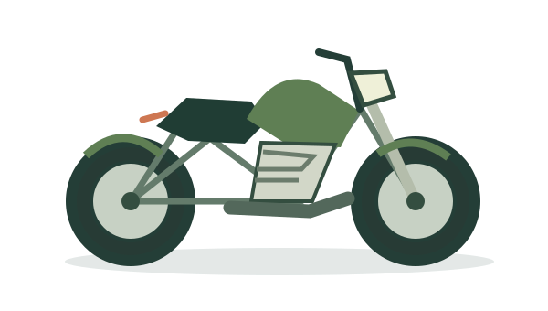
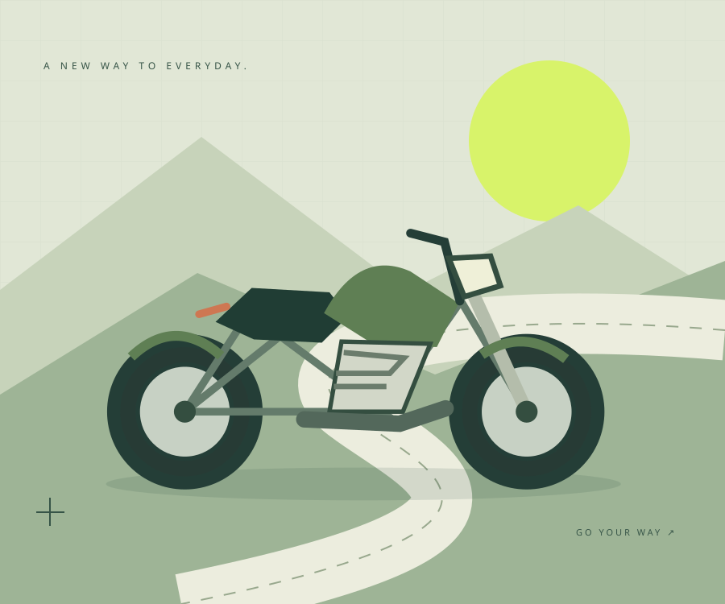

01 / CITYYOUR NEXT RIDE, YOUR NEXT DAY.
次の毎日を、
走り出そう。
いつもの通勤も、気ままな週末も。
あなたらしい一台から、バイクのある暮らしへ。
バイクに詳しくなくても、大丈夫。

街へ。海へ。その先へ。SCROLL TO EXPLORE
01 / ABOUT US
バイクとの距離が、
ぐっと近くなる場所。
「バイクに乗ってみたい」。
その気持ちを、最初の一歩に。
モトリンク福岡は、福岡でのバイクライフをテーマにした架空のショップです。はじめての一台を探す方にも、長く大切に乗りたい方にも、わかりやすく寄り添うお店をイメージしました。
このサイトでは、店舗の案内からAIチャットでの相談までを体験できます。
日常点検・定期点検
タイヤやブレーキなど、安全に走るために確認したいポイントをご案内。
オイル・消耗品の交換
交換時期やメンテナンスの考え方など、気になる疑問を整理します。
不調・気になる症状の相談
「いつもと違う」を感じたら。無理に走行せず、専門家への相談を。
デモ上のサービス紹介です。実際の整備受付・診断・見積もりは行いません。
04 / HOW IT WORKS
まずは、話すところから。
実際のお店でのご相談を想定した、ご利用の流れです。
- STEP 01
気になることを相談
用途や好み、困っていること。まずは気軽に伝えてみましょう。
- STEP 02
一緒に選択肢を整理
バイク選びや整備について、必要な情報・確認事項を整理します。
- STEP 03
納得して、次の一歩へ
条件や内容を確認して判断。デモではAIへの質問を体験できます。
LET’S TALK ABOUT YOUR RIDE.
その疑問、
AIに聞いてみませんか。
バイク選びや点検・整備の気になることを、
チャット形式で気軽に質問できます。
外部サービス Dify が新しいタブで開きます。
個人情報は入力しないでください。AIの回答には誤りが含まれる場合があります。
QUESTIONS
よくあるご質問
このお店でバイクを購入・予約できますか？
できません。モトリンク福岡はポートフォリオ用の架空店舗です。販売、予約、整備の受付は行っていません。
チャットでは何ができますか？
完成済みのDify FAQチャットボットを体験できます。店舗案内や点検・整備などについて質問できますが、回答はデモであり、実在店舗の情報や正式な診断ではありません。
住所や電話番号、販売価格はどこにありますか？
架空の情報を実在のものと誤認させないため、住所・電話番号・販売価格は掲載していません。実在のお客様の口コミや店舗実績も掲載していません。